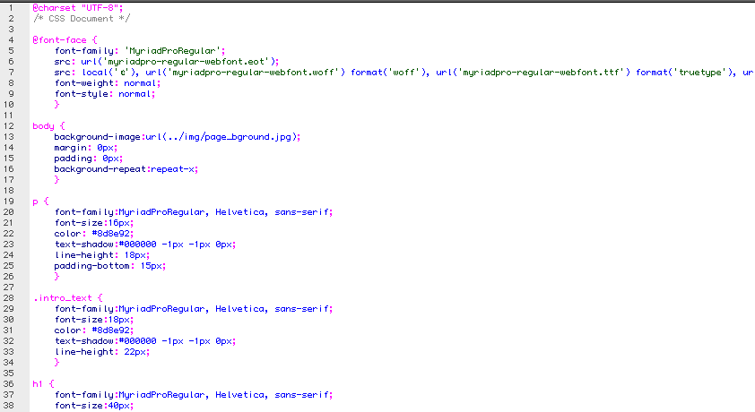

Created: 10/25/2010
By: Jonathan Atkinson
Thank you for purchasing my template. If you have any questions that are beyond the scope of this help file, please feel free to email via my user page contact form here. Thanks so much!
Included in this template package is a single design landing page available in 3 colors, red, green and blue. I have provided each in a separate folder to make organization easier for everyone. I have included full layered versions of each design and color to make editing easy and have included layered versions of particular page elements to make creating your own images, logos etc as easy and simple as possible.
Landing pages are very specific beasts - they demand a clear and precise message, easy to read content, clear benefits and simple imagery to portray the product - finally, but yet most importantly a call to action area should be above the fold and stand out with another benefit in text on the button - in this case we have a clear benefit of BUY NOW. There are a wealth of articles online that explain many things above landing pages - technically ANY page is a landing page on any website, but the industry has many names for conversion focused designs and the most popular is "landing page". Good practices have been included in this design with a lose Z reading pattern, clear messages, good sharp design and benefits everywhere - try to keep your message clear and to the point - remember that the first 2 words in a paragraph are the most likey to be read or skimmed over - so start with something strong!
Using the pre-defined areas on the page to highlight your products benefits will work for you - don't create 25 list items under benefits - most that will be read is about 5 - adding too much fancy stuff will block the message also - use the image gallery to your advantage - it automatically creates a slideshow gallery for you out of the box and creates the thumbs for a more professional appearance. Landing page design and implementation is almost an artform - but one without 100% proven ways of doing things - they require time and testing - changing colors etc changing one thing can make a huge difference - be patient - you have a wonderful starting block with this template so use it as such.
You will also notice that the social aspect of the web that is very important to be able to reach out to your customers and gain feedback and to spread the word about your product are included - they are right under the benefits section to highlight them well, but without distracting from the content - handy fancy tooltips add a more polished appearance to the icons. I have also included a twitter feedin the footer to help you connect with your visitors and in the footer you could link to your corporate site or blog or help pages easily.
Each HTML is correctly coded - calls all javascript files and css files in each file where necessary. You should not have to change anything in the way these html files connect to their relevant css and js files as long as you upload everything in order (see instructions for installing below).
All div's have been labeled to make alterations as easy as possible within the html and CSS files.
If you would like to edit the color, font, or style of any elements, you would edit the corresponding CSS style in the CSS file in the CSS folder:
h1 {
font-family:MyriadProRegular, Helvetica, sans-serif;
font-size:40px;
color: #afb0b4;
text-shadow:#000000 -1px -1px 0px;
letter-spacing:-2px;
line-height: 50px;
text-transform:uppercase;
}
I'm using 2 CSS files in this template. Included in this template download is a single CSS directory / folder for the template - all necessary css files are included and shouldn't need any alterations unless you wish to customize anything. Here is a list and description for each one:
NOTE: included in the css folder are the web friendly @fontface fonts used for various browsers - all the same FREE font MYRIAD PRO REGULAR - these are required for the use of the special font in browsers for all pages.
Each css file should be easy to follow and if using a modern html page editor you should be able to easily see the structure of each css file.

Included in this template download is a single JS directory / folder - all necessary JS files are included (4 in total) and shouldn't need any alterations unless you wish to customize anything. Here is a list and description for each one:
Please note that alterations to JS files could result in certain features not working - you should not attempt to alter javascript unless you are experienced - please use the web site references next to each JS file listed above for further details and help.
I've included 12 psd's (photoshop native files) with this theme:
Each PSD represents a page or element to make editing easier. All PSD files can be opened in Photoshop CS3 or earlier and contain well labelled layers and groups.
All layers are grouped so that elements from sections are contained in a group labelled for ease of finding something very quickly. However I have also created several separate PSD files for easier editing - what I mean by this is if you want to create new thumb images for the gallery then open image_well.psd - edit and save out the file to replace the original image - done! The same is available for the logos, computer, phones and more.
Basically I have attempted to think of myself receiving this file and wanting to customize the certain elements I know a user would want to change and have supplied individual files for these items to make it as easy as possible. You should be able to change the majority of the graphical content on all these pages very quickly indeed.
All layer effects (styles) are included on the layers so that full editing and personalization is fully available.
I've used the following graphical items / fonts that are free to use by their kind authors.
Including in the footer is a twiiter feed using the JS code in the header and separate JS file. Setup could not be easier - look in the html code towards the very top and you will see this code:
$(document).ready(function(){
$(".tweet").tweet({
username: "twsjonathan",
join_text: "auto",
avatar_size: 0,
count: 2,
auto_join_text_default: "we said,",
auto_join_text_ed: "we",
auto_join_text_ing: "we were",
auto_join_text_reply: "we replied to",
auto_join_text_url: "we were checking out",
loading_text: "loading tweets..."
});
});
This piece of code is all you need to change to get YOUR feed from Twitter - simply alter this line
username: "twsjonathan",
To your OWN username at twitter - the above settings you will also see this line:
count: 2,
This is the number of Tweets to draw in - the design was created specifically for 2 feeds so I do not recommend more than that - it's a landing page after all not a twitter page - that's why they can click on those feeds to go to twitter - there's also a small Follow Us editable link in the footer you can simply edit with your specific Twitter URL so people can click and follow you.
Once again, thank you so much for purchasing this template. As I said at the beginning, I'd be glad to help you if you have any questions relating to this template. No guarantees, but I'll do my best to assist. If you have a more general question relating to the templates on ThemeForest, you might consider visiting the forums and asking your question in the "Item Discussion" section.
Jonathan Atkinson